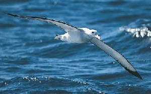

A világ egyik legnagyobb szárnyfesztávolságú madara, kiterjesztett szárnyainak szélessége 3,5 méter, a vándoralbatrosz (Diomedea exulans) bámulatosan hosszú ideig képes siklani a levegőben: gyakran több ezer kilométert is megtesz egyetlen repüléssel. Hosszabb időt csupán a költési és fiókanevelési időszakban tölt a parton, közelről csupán ilyenkor figyelhető meg. Ez ugyanakkor életüknek legnagyobb megpróbáltatása is. A fiókanevelés ugyanis hatalmas kihívások elé állítja a szülőket. A vándoralbatroszok emberi szemmel nézve a szülői önfeláldozás és az örök hűség mintaképei. Azonban csak az emberi értelem ruházza fel őket eme nemes tulajdonságokkal. A valóságban ennek a gyönyörű madárfajnak esélye sem lenne a fennmaradásra, ha a párok nem fognának össze az utódnevelésben. Szükségük is van erre az összefogásra, mert a környezet nagyon zord és a fióka hatalmas étvágyú. A vándoralbatroszok azzal, hogy hatalmas termetűvé váltak az evolúció során, arra ítéltették magukat, hogy hatalmas utódokat kell nevelniük. Emiatt arra kényszerültek, hogy csupán egyetlen fiókát neveljenek, azt is mindössze kétévente.
A fióka 80 grammosan bújik ki a tojásból és azonnal hozzáfog az eleség követeléséhez. Mivel százszoros súlygyarapodást kell elérnie ahhoz, hogy 8 kilogrammos kirepülő fiókává váljék, rengeteg ennivalót igényel. Néhány hónap elteltével a kicsiny gyermek már háromszor akkora, mint az apja, úgy néz ki a fészekben, mint egy méteres, 35 kilós kuglibábu, fején egy örökké tátogó, éhes csőrrel.
Forrás: http://www.sulinet.hu/tart/ncikk/jc/0/24385/vandoralbatrosz.htm